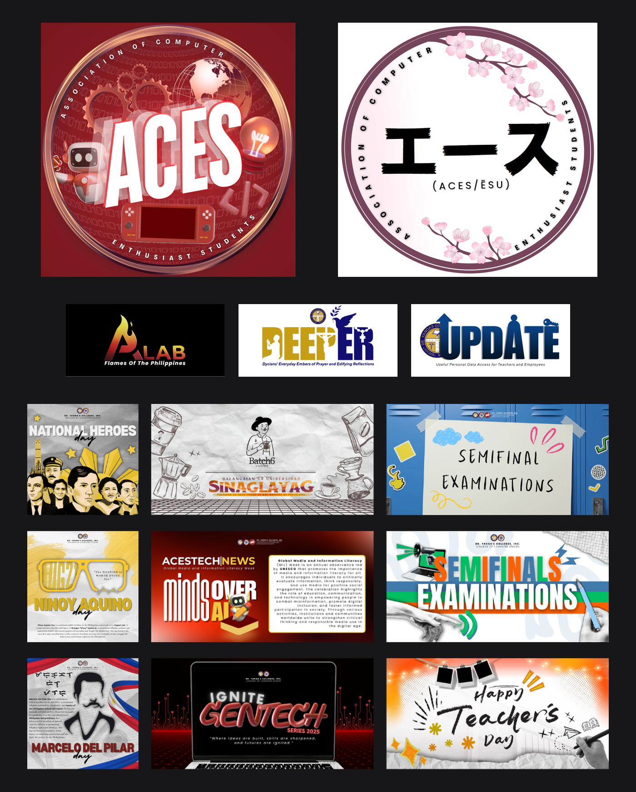
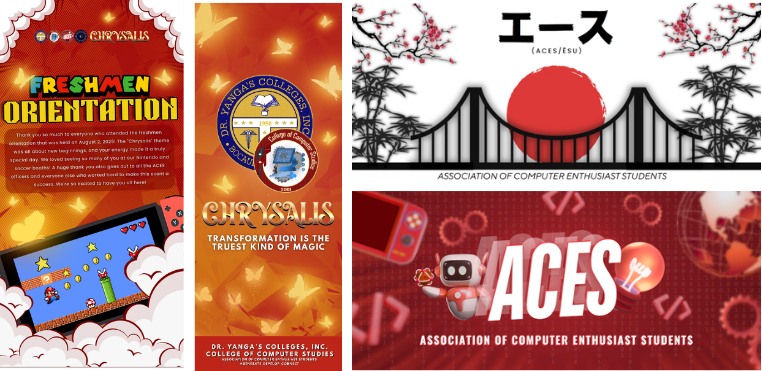
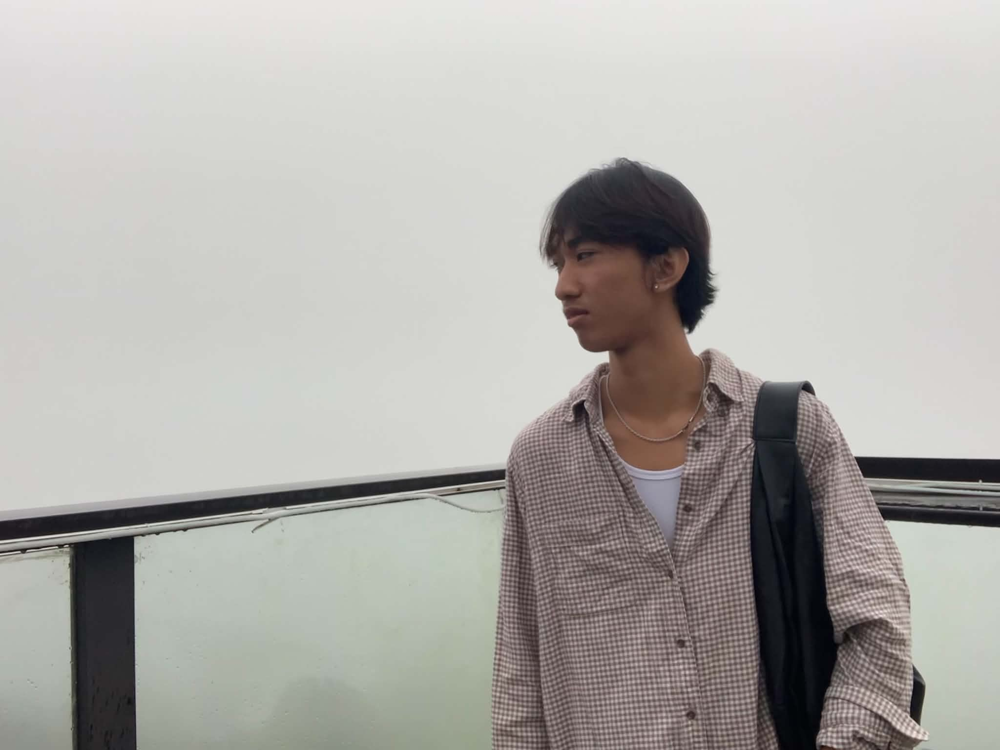

Selected Work
A few things I've designed & built.
These are project-purpose pieces I've made so far — a mix of engineering coursework and design commissions. Swap these out with your own case studies as you finish them.
These are project-purpose pieces I've made so far — a mix of engineering coursework and design commissions. Swap these out with your own case studies as you finish them.
Whispr is an anonymous confession board — post under a made-up name and avatar, never your real identity. Every account still has to prove it belongs to one real, unique person, through Google/Discord OAuth or an email verified with a 6-digit code, so it can't be spammed with throwaway accounts. New users fill out a short, deliberately vague bio (hobbies, lifestyle, work/study) that adds personality without breaking anonymity.
Confessions get tagged by category and live hashtags, reacted to with "relate" instead of a like, and threaded with comments. Enough community flags auto-hides a post for review. Two live layers sit on top: follow someone to unlock a private shared drawing canvas with them, or send a 10–15 second clip of a real song that interrupts their screen full-screen — playable only once, ever.
Every uploaded photo is scanned client-side for faces and blocked if one's detected, so avatars stay anonymous by design, with a built-in avatar generator as a no-photo option. Built with Node.js and Express, no database — per-feature JSON stores with async locks — vanilla JS/HTML/CSS on the front end with no framework or build step, and two WebSocket channels for the drawing canvas and notifications.
Close ✕OASIS is a management app I'm building for ACES (Association of Computer Enthusiast Students) at Dr. Yanga's Colleges — one place for officers to run the org's day-to-day admin instead of scattered spreadsheets and paper. Its core job: track whether every member is in good standing — dues paid, required events attended — so by the end of the semester it's instantly clear who's cleared and who still owes something.
Login is officer-only; students are records the officers manage, not users of the system. Dashboard gives a landing overview — total/active/cleared/pending counts, dues-collection progress, a snapshot of recent attendance. User is the searchable, filterable student roster, with an ID-card-style profile per student. Payments tracks dues and requirements (org shirt, lanyard, booklet), lets officers add new requirement types on the fly, and exports a filtered list to Excel. Attendance lets officers build a sheet per event and check students in by ID — plus a locked-down Kiosk Mode students can use themselves, showing only their own name and time, never the full roster. Import bulk-adds students from an Excel/CSV file with validation against bad or duplicate rows.
Current limitation, worth being upfront about: there's no real backend yet — everything lives in the browser's localStorage, so it works well for one officer on one device but won't sync across officers on different computers. Shared, simultaneous access is the natural next step.

An ongoing compilation of the graphic design and editing work I've made outside of coding — org logos, palmares and exam-week announcement graphics, event posters, publication layouts, and full brand campaigns. Most of it was made for ACES and the orgs around it, put together in Canva.

.png)
.png)

.png)

A personal black-and-white photography series — cafe hopping, trips, and everyday moments, shot on my phone and edited for tone and contrast in Lightroom. Click any shot below to view it larger, one at a time.
Close ✕